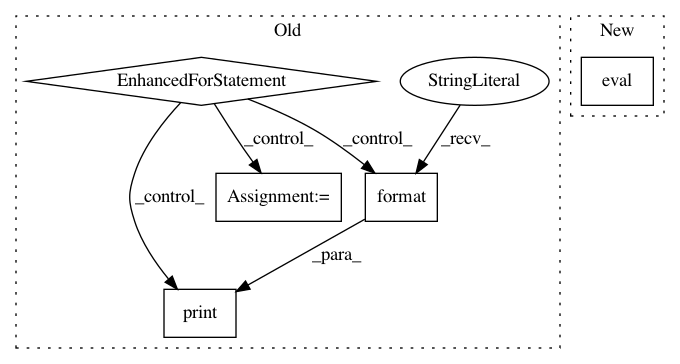

c63cc933782e2de32c9fe74c18b337b2bbe0f242,test/examples/test_kissgp_variational_regression.py,TestKissGPVariationalRegression,test_kissgp_gp_mean_abs_error,#TestKissGPVariationalRegression#,61
Before Change
with gpytorch.beta_features.diagonal_correction():
optimizer = optim.SGD(list(gp_model.parameters()) + list(likelihood.parameters()), lr=0.001)
scheduler = optim.lr_scheduler.MultiStepLR(optimizer, milestones=[15], gamma=0.1)
for _ in range(20):
scheduler.step()
batchnum = 0
for x_batch, y_batch in loader:
batchnum += 1
x_batch = Variable(x_batch.float())
y_batch = Variable(y_batch.float())
optimizer.zero_grad()
output = gp_model(x_batch)
loss = -mll(output, y_batch)
loss.backward()
for name, param in gp_model.named_parameters():
print("minibatch {} grad norm".format(batchnum), name, param.grad.norm())
optimizer.step()
for name, param in gp_model.named_parameters():
print(name, param.grad.norm())
self.assertTrue(param.grad is not None)
self.assertGreater(param.grad.norm().item(), 0)
After Change
self.assertGreater(param.grad.norm().item(), 0)
// Test the model
model.eval()
likelihood.eval()
test_preds = likelihood(model(Variable(test_x))).mean()
mean_abs_error = torch.mean(torch.abs(Variable(test_y) - test_preds))
In pattern: SUPERPATTERN
Frequency: 3
Non-data size: 5
Instances
Project Name: cornellius-gp/gpytorch
Commit Name: c63cc933782e2de32c9fe74c18b337b2bbe0f242
Time: 2018-07-19
Author: jrg365@cornell.edu
File Name: test/examples/test_kissgp_variational_regression.py
Class Name: TestKissGPVariationalRegression
Method Name: test_kissgp_gp_mean_abs_error
Project Name: OpenNMT/OpenNMT-py
Commit Name: b87368e1e7fd832b505db9cc08015ac7af8f95de
Time: 2016-12-23
Author: jvanamersfoort@twitter.com
File Name: VAE/main.py
Class Name:
Method Name: test